Learn how to import data, check data quality, and clean data.
Learn how to manipulate and transform data.
Case Study A - French Insurance Dataset
We will continue to use the freMTPL2freq dataset. As a preview, this dataset includes risk features collected for 677,991 motor third-party liability policies, observed mostly over one year. In addition, freMTPL2freq contains both the risk features and the claim number per policy. The dataset consists of 12 columns:
IDpol: The policy ID (used to link with the claims dataset).
ClaimNb: Number of claims during the exposure period.
Exposure: The period of exposure for a policy, in years.
Area: The area code.
VehPower: The power of the car (ordered categorical).
VehAge: The vehicle age, in years.
DrivAge: The driver age, in years (in France, people can drive a car at 18).
BonusMalus: Bonus/malus, between 50 and 350 (<100 means bonus, >100 means malus in France).
VehBrand: The car brand (unknown categories).
VehGas: The fuel type (Diesel or regular).
Density: The density of inhabitants (number of inhabitants per km²) in the city where the driver lives.
Region: The policy regions in France (based on a standard French classification).
Let’s first import the data, and then begin by briefly examining it.
IDpol ClaimNb Exposure VehPower
Min. : 1 n.vars :1 Min. :0.002732 Min. : 4.000
1st Qu.:1157951 n.cases:36102 1st Qu.:0.180000 1st Qu.: 5.000
Median :2272152 Median :0.490000 Median : 6.000
Mean :2621857 Mean :0.528750 Mean : 6.455
3rd Qu.:4046274 3rd Qu.:0.990000 3rd Qu.: 7.000
Max. :6114330 Max. :2.010000 Max. :15.000
VehAge DrivAge BonusMalus VehBrand
Min. : 0.000 Min. : 18.0 Min. : 50.00 B12 :166024
1st Qu.: 2.000 1st Qu.: 34.0 1st Qu.: 50.00 B1 :162736
Median : 6.000 Median : 44.0 Median : 50.00 B2 :159861
Mean : 7.044 Mean : 45.5 Mean : 59.76 B3 : 53395
3rd Qu.: 11.000 3rd Qu.: 55.0 3rd Qu.: 64.00 B5 : 34753
Max. :100.000 Max. :100.0 Max. :230.00 B6 : 28548
(Other): 72696
VehGas Area Density
Length:678013 A:103957 Min. : 1
Class :character B: 75459 1st Qu.: 92
Mode :character C:191880 Median : 393
D:151596 Mean : 1792
E:137167 3rd Qu.: 1658
F: 17954 Max. :27000
Region
Centre :160601
Rhone-Alpes : 84752
Provence-Alpes-Cotes-D'Azur: 79315
Ile-de-France : 69791
Bretagne : 42122
Nord-Pas-de-Calais : 40275
(Other) :201157
From the outputs above, we can see that there are 678013 individual car insurance policies and 12 variables associated with each policy. At first glance, we notice that the data types of some columns may need adjustment. For example, ClaimNb is stored as a table and VehGas is stored as a character variable. We may want to convert these to integer and factor, respectively. However, note that some modelling packages can handle these automatically.
# Convert ClaimNb from a table to integerfreMTPL2freq$ClaimNb <-as.integer(as.numeric(freMTPL2freq$ClaimNb))# Convert VehGas from character to factorfreMTPL2freq$VehGas <-as.factor(freMTPL2freq$VehGas)# Recheck the data structure after the adjustments# str(freMTPL2freq)# summary(freMTPL2freq)
Tasks for Case Study A
Based on the dataset above, complete the following tasks:
Are there any missing values in the dataset? How can you check this?
Examine the distribution of exposure and the number of claims. Do you observe any unusual patterns?
Is Area an ordinal categorical variable? How can you verify this?
Explore the relationship between driver age (DrivAge) and claim frequency. How does age influence the frequency of claims?
Analyse the relationships between the predictors. Are there any strong correlations or dependencies? What are the potential implications for modelling?
Solution A.1: Missing values
Task:
Are there any missing values in the dataset? How can you check this?
# Check for NA values in freMTPL2freqna_summary_freq <-sapply(freMTPL2freq, function(x) sum(is.na(x)))print(na_summary_freq)
IDpol ClaimNb Exposure VehPower VehAge DrivAge BonusMalus
0 0 0 0 0 0 0
VehBrand VehGas Area Density Region
0 0 0 0 0
Fortunately, there are no missing values in this dataset.
Solution A.2: Distribution of exposure and claims
Task: Examine the distribution of exposure and the number of claims. Do you observe any unusual patterns?
# Histogram of exposureggplot(freMTPL2freq, aes(x = Exposure)) +geom_histogram(binwidth =0.1, fill ="lightblue", colour ="black") +labs(title ="Distribution of Exposure", x ="Exposure", y ="Frequency") +theme_minimal()
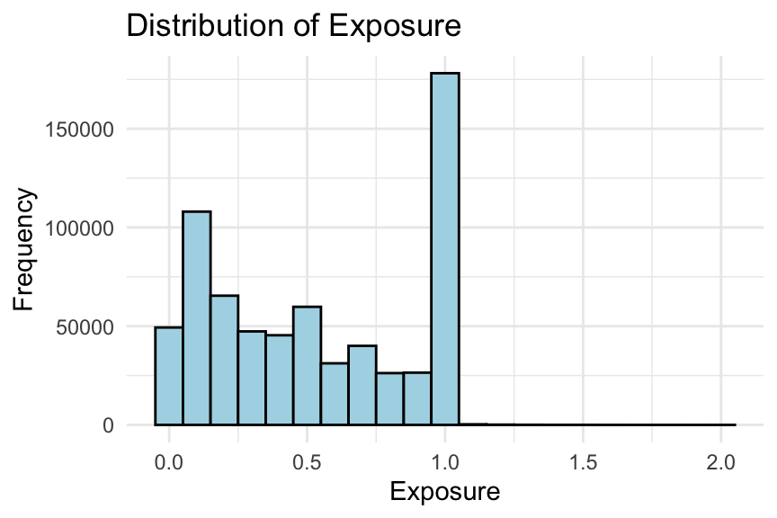
# Density plot of exposureggplot(freMTPL2freq, aes(x = Exposure)) +geom_density(fill ="blue", alpha =0.5) +labs(title ="Density Plot of Exposure", x ="Exposure", y ="Density") +theme_minimal()
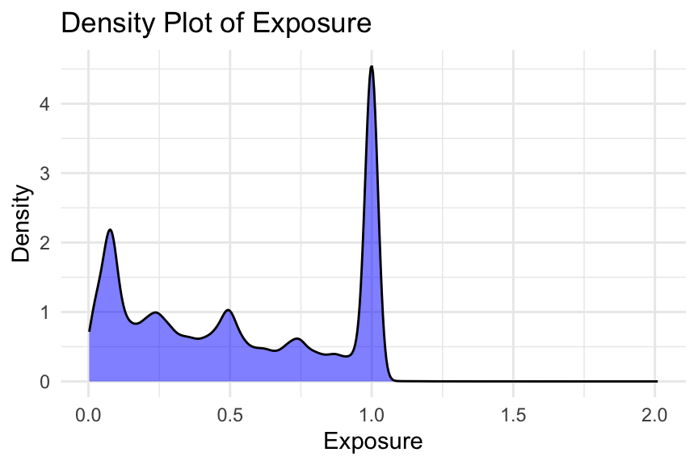
# Boxplot of exposureggplot(freMTPL2freq, aes(y = Exposure)) +geom_boxplot(fill ="lightgreen", colour ="black") +labs(title ="Boxplot of Exposure", y ="Exposure") +theme_minimal()
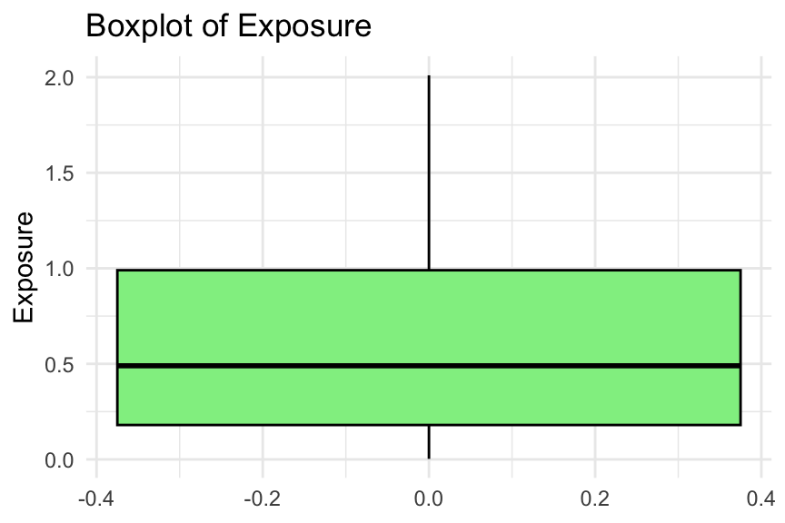
# Frequency table of the number of claimsfreMTPL2freq %>%count(ClaimNb) %>%print()
We consider several plots to examine the distribution of exposure. Typically, you would only need to show one of these in an EDA. Note that some exposures are greater than one year (i.e., 1224 policies).
In addition, we present the frequency table of the number of claims. There are only 9 policies with more than 4 claims, as shown in the table. Without further information, it is difficult to determine whether these entries are errors. You may choose to keep them or consider capping them. For example, in Noll, Salzmann, and Wuthrich (2020), all exposures greater than 1 are set to 1, and all claim numbers greater than 4 are set to 4.
Solution A.3: Is Area ordinal?
Task: Is Area an ordinal categorical variable? How can you verify this?
# Calculate total exposure per area codetotal_exposure_per_area <- freMTPL2freq %>%group_by(Area) %>%summarise(TotalExposure =sum(Exposure, na.rm =TRUE))# Bar plot of total exposure per area codeggplot(total_exposure_per_area, aes(x = Area, y = TotalExposure)) +geom_col(fill ="lightblue") +labs(title ="Total Exposure per Area", x ="Area", y ="Total Exposure") +theme_minimal()
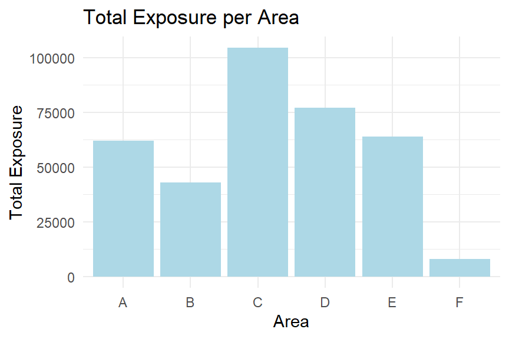
# Calculate claim frequency per area codeclaim_frequency_per_area <- freMTPL2freq %>%group_by(Area) %>%summarise(TotalClaims =sum(ClaimNb, na.rm =TRUE),TotalExposure =sum(Exposure, na.rm =TRUE),ClaimFrequency = TotalClaims / TotalExposure )# Bar plot of claim frequency per area codeggplot(claim_frequency_per_area, aes(x = Area, y = ClaimFrequency)) +geom_col(fill ="lightgreen") +labs(title ="Observed Claim Frequency per Area", x ="Area", y ="Claim Frequency") +theme_minimal()
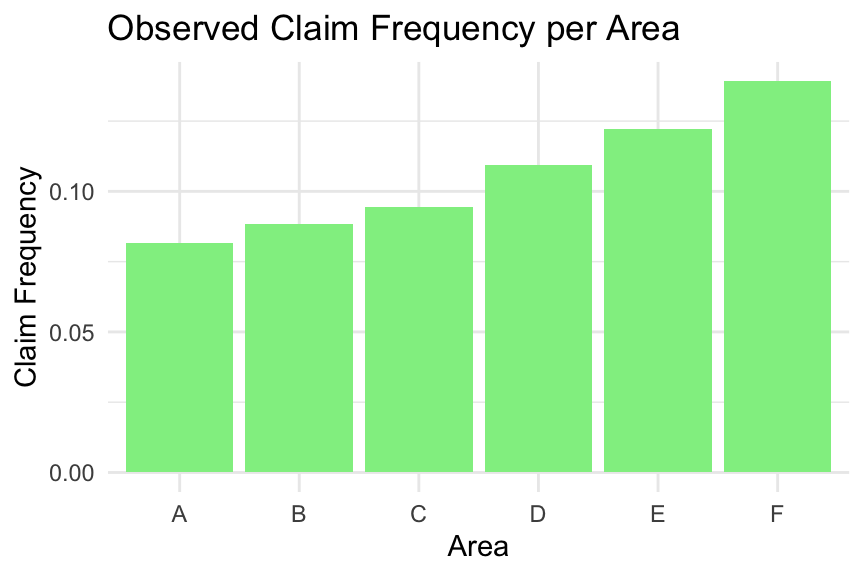
We first examine whether the total exposure is roughly the same across areas. This is not the case; for example, Area F has a much lower total exposure.
Next, we examine the observed claim frequency by area. The claim frequency increases consistently from Area A to Area F, suggesting that Area has a natural ordering. Therefore, Area can be treated as an ordinal categorical variable.
Exercise:
Is VehPower an ordinal variable? Can you follow the code above to check this?
Solution A.4: Age vs claim frequency
Task: Explore the relationship between driver age (DrivAge) and claim frequency. How does age influence the frequency of claims?
# Calculate total exposure by driver agetotal_exposure_per_age <- freMTPL2freq %>%group_by(DrivAge) %>%summarise(TotalExposure =sum(Exposure, na.rm =TRUE)) %>%arrange(DrivAge)# Bar plot of total exposure by driver ageggplot(total_exposure_per_age, aes(x = DrivAge, y = TotalExposure)) +geom_col(fill ="lightblue") +labs(title ="Total Exposure by Driver Age", x ="Driver Age", y ="Total Exposure") +theme_minimal()
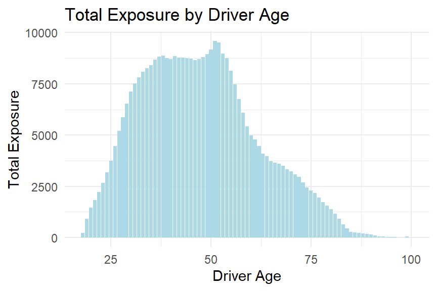
# Calculate observed claim frequency by driver ageobserved_frequency_per_age <- freMTPL2freq %>%group_by(DrivAge) %>%summarise(TotalClaims =sum(ClaimNb, na.rm =TRUE),TotalExposure =sum(Exposure, na.rm =TRUE),ObservedFrequency = TotalClaims / TotalExposure ) %>%arrange(DrivAge)# Plot observed claim frequency by driver ageggplot(observed_frequency_per_age, aes(x = DrivAge, y = ObservedFrequency)) +geom_point(colour ="red", size =2) +geom_smooth(se =FALSE) +labs(title ="Observed Claim Frequency by Driver Age", x ="Driver Age", y ="Observed Claim Frequency") +theme_minimal()
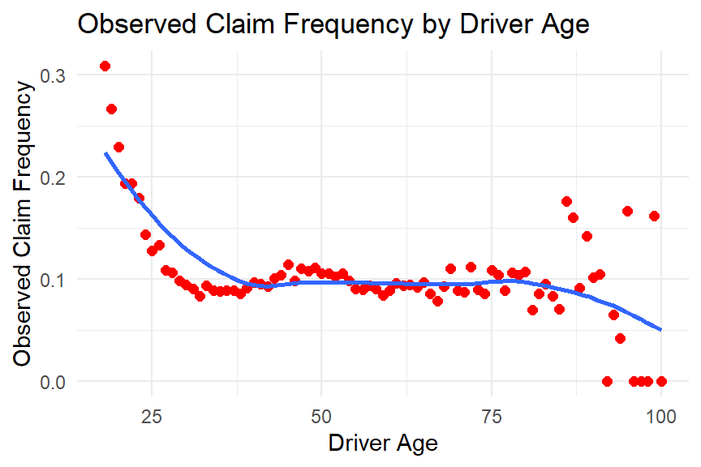
From the plots above, we observe that the relationship between the predictor DrivAge and the observed claim frequency is non-linear. Please note this, as we will explore how to incorporate this into modelling in the coming weeks.
Exercise:
Can you follow the code above, or write your own code, to explore the relationship between the observed claim frequency and other predictors in the dataset? Did you find any interesting patterns?
Solution A.5: Relationships between predictors
Task: Analyse the relationships between the predictors. Are there any strong correlations or dependencies? What are the potential implications for modelling?
# Convert Area to an ordered numeric variable (for exploratory purposes only)freMTPL2freq$AreaNumeric <-as.numeric(as.ordered(freMTPL2freq$Area))# Select relevant variablescorrelation_data <- freMTPL2freq %>%select(AreaNumeric, VehPower, VehAge, DrivAge, BonusMalus, Density)# Compute the Pearson correlation matrixcorrelation_matrix <-cor(correlation_data, method ="pearson")# Display the correlation matrixprint(correlation_matrix)
# Load package for visualisationlibrary(ggcorrplot)# Visualise the correlation matrixggcorrplot( correlation_matrix,method ="circle",type ="lower",lab =TRUE,title ="Pearson Correlation Matrix")
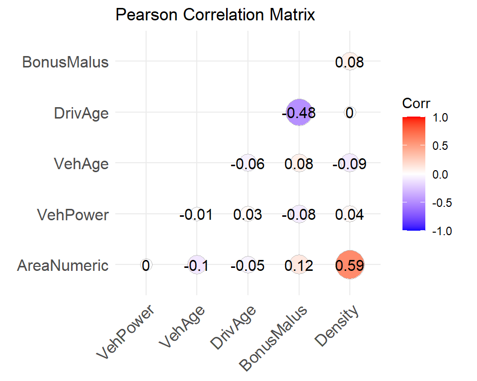
Here, we examine the correlations between numerical and ordinal features. Note that Area has been converted to an ordered numeric variable for exploratory purposes, so the resulting correlations should be interpreted with caution.
From the correlation matrix, we observe that Area and Density appear to have a relatively strong positive association. In addition, there is a negative relationship between DrivAge and BonusMalus.
Examining relationships between predictors is important because it helps identify potential multicollinearity, reveals possible interactions, and provides insights into how predictors may jointly influence the response variable.
Exercise:
In the above, we only considered Pearson’s correlation between numerical features. Can you explore additional interrelationships between predictors? For example, you might investigate how vehicle brand relates to other vehicle characteristics, or to driver and policy characteristics.
In 2005, Taiwan experienced a credit card debt crisis, driven in part by aggressive expansion in the consumer credit market. Financial institutions issued a large number of credit cards, often to customers with limited repayment capacity. At the same time, many cardholders accumulated substantial debt through frequent credit use. This combination led to a deterioration in credit quality and weakened confidence in the consumer finance sector, posing significant challenges for both financial institutions and borrowers (Yeh and Lien 2009).
This episode highlights the importance of risk prediction in consumer finance. By analysing financial information—such as transaction records and repayment history—institutions can better assess credit risk and mitigate potential losses.
This dataset contains information on customers’ default payments, with 30{,}000 observations described over 24 attributes. It includes default payment status, demographic factors, credit information, repayment history, and bill statements of credit card clients in Taiwan from April 2005 to September 2005. The data can be downloaded from the UCI Machine Learning Repository.
This case study examines customers’ default payments in Taiwan and compares the predictive accuracy of the probability of default using shrinkage techniques (lasso, ridge, and elastic net regression) and non-shrinkage methods such as logistic regression. The response variable is a binary variable indicating default payment (Yes =1, No =0). The dataset contains 23 explanatory variables:
LIMIT_BAL: Amount of the given credit (NT dollar), including both individual and supplementary family credit.
PAY_1 - PAY_6: History of past payments. We track the monthly repayment status from April to September 2005:
PAY_1: repayment status in September 2005
PAY_2: repayment status in August 2005
\ldots
PAY_6: repayment status in April 2005
The repayment status is coded as:
-2: no consumption
-1: paid in full
0: use of revolving credit
1: payment delay for one month
\ldots
9: payment delay for nine months or more
BILL_AMT1 - BILL_AMT6: Amount of bill statement (NT dollar):
BILL_AMT1: bill amount in September 2005
BILL_AMT2: bill amount in August 2005
\ldots
BILL_AMT6: bill amount in April 2005
PAY_AMT1 - PAY_AMT6: Amount of previous payments (NT dollar):
PAY_AMT1: payment amount in September 2005
PAY_AMT2: payment amount in August 2005
\ldots
PAY_AMT6: payment amount in April 2005
Tasks for Case Study B
Based on the dataset above, complete the following tasks:
Are there any missing values in the data? If so, suggest possible methods for imputation and apply one of them.
Using visualisations, explore the predictor variables to understand their distributions as well as the relationships between predictors.
Are there any transformations of the predictors that might improve model performance?
Rename the column “default payment next month” as “default”. Are there strong relationships between the default variable and other numeric variables? How can you handle highly correlated variables?
Import data
This case study focuses on pre-processing the data before applying machine learning techniques to predict the response variable.
ID LIMIT_BAL SEX EDUCATION MARRIAGE
Min. : 1 Min. : 10000 1:11888 Min. :0.000 Min. :0.000
1st Qu.: 7501 1st Qu.: 50000 2:18112 1st Qu.:1.000 1st Qu.:1.000
Median :15000 Median : 140000 Median :2.000 Median :2.000
Mean :15000 Mean : 167484 Mean :1.853 Mean :1.552
3rd Qu.:22500 3rd Qu.: 240000 3rd Qu.:2.000 3rd Qu.:2.000
Max. :30000 Max. :1000000 Max. :6.000 Max. :3.000
AGE PAY_1 PAY_2 PAY_3
Min. :21.00 Min. :-2.0000 Min. :-2.0000 Min. :-2.0000
1st Qu.:28.00 1st Qu.:-1.0000 1st Qu.:-1.0000 1st Qu.:-1.0000
Median :34.00 Median : 0.0000 Median : 0.0000 Median : 0.0000
Mean :35.49 Mean :-0.0167 Mean :-0.1338 Mean :-0.1662
3rd Qu.:41.00 3rd Qu.: 0.0000 3rd Qu.: 0.0000 3rd Qu.: 0.0000
Max. :79.00 Max. : 8.0000 Max. : 8.0000 Max. : 8.0000
PAY_4 PAY_5 PAY_6 BILL_AMT1
Min. :-2.0000 Min. :-2.0000 Min. :-2.0000 Min. :-165580
1st Qu.:-1.0000 1st Qu.:-1.0000 1st Qu.:-1.0000 1st Qu.: 3559
Median : 0.0000 Median : 0.0000 Median : 0.0000 Median : 22382
Mean :-0.2207 Mean :-0.2662 Mean :-0.2911 Mean : 51223
3rd Qu.: 0.0000 3rd Qu.: 0.0000 3rd Qu.: 0.0000 3rd Qu.: 67091
Max. : 8.0000 Max. : 8.0000 Max. : 8.0000 Max. : 964511
BILL_AMT2 BILL_AMT3 BILL_AMT4 BILL_AMT5
Min. :-69777 Min. :-157264 Min. :-170000 Min. :-81334
1st Qu.: 2985 1st Qu.: 2666 1st Qu.: 2327 1st Qu.: 1763
Median : 21200 Median : 20089 Median : 19052 Median : 18105
Mean : 49179 Mean : 47013 Mean : 43263 Mean : 40311
3rd Qu.: 64006 3rd Qu.: 60165 3rd Qu.: 54506 3rd Qu.: 50191
Max. :983931 Max. :1664089 Max. : 891586 Max. :927171
BILL_AMT6 PAY_AMT1 PAY_AMT2 PAY_AMT3
Min. :-339603 Min. : 0 Min. : 0 Min. : 0
1st Qu.: 1256 1st Qu.: 1000 1st Qu.: 833 1st Qu.: 390
Median : 17071 Median : 2100 Median : 2009 Median : 1800
Mean : 38872 Mean : 5664 Mean : 5921 Mean : 5226
3rd Qu.: 49198 3rd Qu.: 5006 3rd Qu.: 5000 3rd Qu.: 4505
Max. : 961664 Max. :873552 Max. :1684259 Max. :896040
PAY_AMT4 PAY_AMT5 PAY_AMT6 default
Min. : 0 Min. : 0.0 Min. : 0.0 0:23364
1st Qu.: 296 1st Qu.: 252.5 1st Qu.: 117.8 1: 6636
Median : 1500 Median : 1500.0 Median : 1500.0
Mean : 4826 Mean : 4799.4 Mean : 5215.5
3rd Qu.: 4013 3rd Qu.: 4031.5 3rd Qu.: 4000.0
Max. :621000 Max. :426529.0 Max. :528666.0
unique(data %>%select(MARRIAGE))
unique(data %>%select(EDUCATION))
sum(data$MARRIAGE ==0)
[1] 54
sum(data$EDUCATION ==0)
[1] 14
There are no explicit missing values (NA) in the dataset. However, from the summary and checks above, we observe that some entries in MARRIAGE and EDUCATION are coded as 0, which likely represent missing or undefined categories.
Possible approaches
Treat the value 0 in MARRIAGE and EDUCATION as a separate category (e.g., “others”).
Impute missing values using the most frequent category (mode).
Impute the missing values
# Before imputation (MARRIAGE)mplot1 <-ggplot(data = data, aes(x = MARRIAGE, fill = default)) +geom_bar() +stat_count(aes(label = ..count..)) +ggtitle("Before Imputing") +theme(plot.title =element_text(hjust =0.5))# Replace 0 with 3 ("others") in MARRIAGEdata$MARRIAGE <-ifelse(data$MARRIAGE ==0, 3, data$MARRIAGE)# After imputation (MARRIAGE)mplot2 <-ggplot(data = data, aes(x = MARRIAGE, fill = default)) +geom_bar() +stat_count(aes(label = ..count..)) +ggtitle("After Imputing") +theme(plot.title =element_text(hjust =0.5))grid.arrange(mplot1, mplot2, ncol =2)
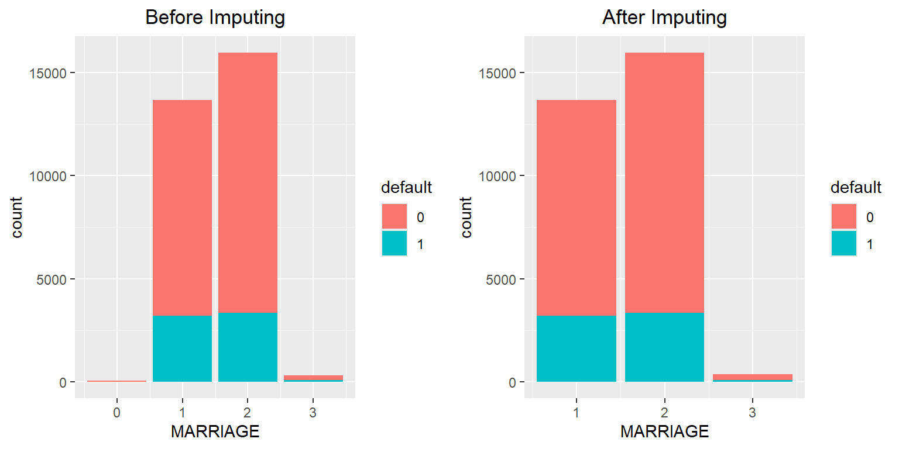
# Before imputation (EDUCATION)eplot1 <-ggplot(data = data, aes(x = EDUCATION, fill = default)) +geom_bar() +stat_count(aes(label = ..count..)) +ggtitle("Before Imputing") +theme(plot.title =element_text(hjust =0.5))# Replace 0, 5, and 6 with 4 ("others") in EDUCATIONdata$EDUCATION <-ifelse(data$EDUCATION %in%c(0, 5, 6), 4, data$EDUCATION)# After imputation (EDUCATION)eplot2 <-ggplot(data = data, aes(x = EDUCATION, fill = default)) +geom_bar() +stat_count(aes(label = ..count..)) +ggtitle("After Imputing") +theme(plot.title =element_text(hjust =0.5))grid.arrange(eplot1, eplot2, ncol =2)
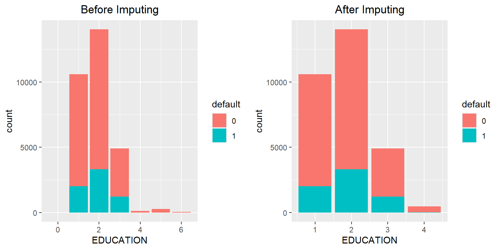
Solution B.2: Exploring predictors
Task: Using visualisations, explore the predictor variables to understand their distributions as well as the relationships between predictors.
Exploration of social status predictors
# Step 1: Calculate default rate for MARRIAGEmarriage_df <- data %>%group_by(MARRIAGE) %>%summarise(DefaultRate =mean(default ==1))# Step 2: Calculate default rate for EDUCATIONeducation_df <- data %>%group_by(EDUCATION) %>%summarise(DefaultRate =mean(default ==1))# Step 3: Calculate default rate for SEXsex_df <- data %>%group_by(SEX) %>%summarise(DefaultRate =mean(default ==1))# Step 4: Plot each separatelyp1 <-ggplot(marriage_df, aes(x =as.factor(MARRIAGE), y = DefaultRate)) +geom_col(fill ="skyblue4") +labs(x ="Marriage", y ="Default Rate") +theme_minimal()p2 <-ggplot(education_df, aes(x =as.factor(EDUCATION), y = DefaultRate)) +geom_col(fill ="skyblue4") +labs(x ="Education", y ="Default Rate") +theme_minimal()p3 <-ggplot(sex_df, aes(x =as.factor(SEX), y = DefaultRate)) +geom_col(fill ="skyblue4") +labs(x ="Gender", y ="Default Rate") +theme_minimal()# Step 5: Arrange plots togethergrid.arrange(p1, p2, p3, ncol =3,top ="Default Rate by Social Status Predictors")
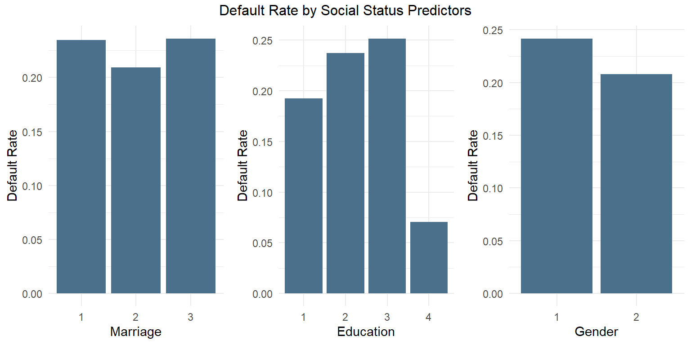
Male customers (male =1) appear to have a higher probability of default.
Higher levels of education are associated with a lower probability of default.
Married customers appear to have a higher probability of default.
Exploration of response variable
# Calculate the proportion of defaulters and non-defaultersdefault_df <- data %>%group_by(default) %>%summarise(Count =n(),Proportion = Count /nrow(data) )# Plot the proportion of defaulters and non-defaultersggplot(default_df, aes(x = default, y = Proportion, fill = default)) +geom_col(show.legend =FALSE) +labs(title ="Distribution of Default Status",x ="Default",y ="Proportion" ) +theme_minimal()
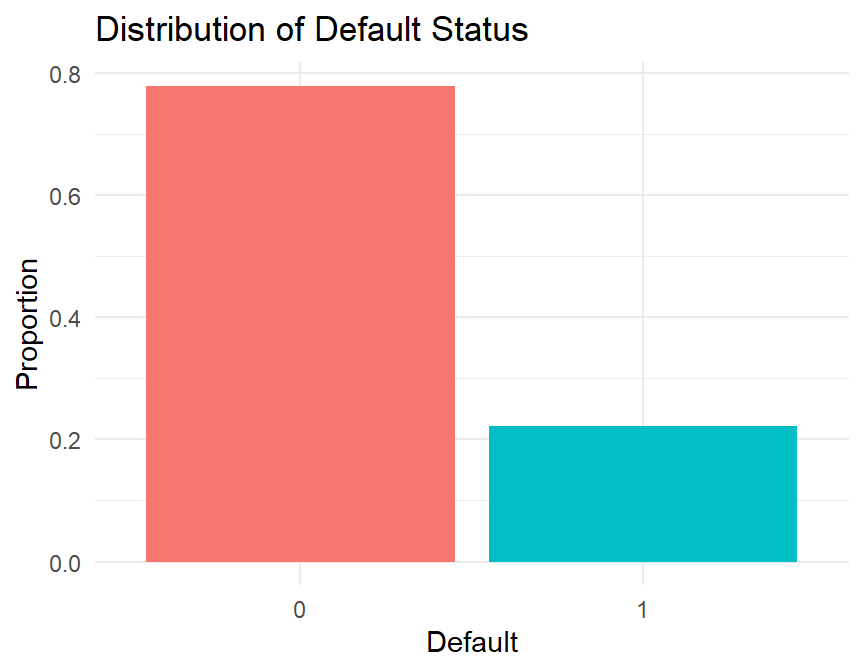
The target variable is imbalanced, with approximately 20% defaults and 80% non-defaults. This can be addressed using under-sampling, over-sampling, or no sampling, depending on the modelling objective.
Exploration of age variable
# Boxplot of age by default statusggplot(data = data, aes(x =as.factor(default), y = AGE)) +geom_boxplot(fill ="skyblue4") +labs(title ="Age by Default", x ="Default", y ="Age") +theme_minimal()
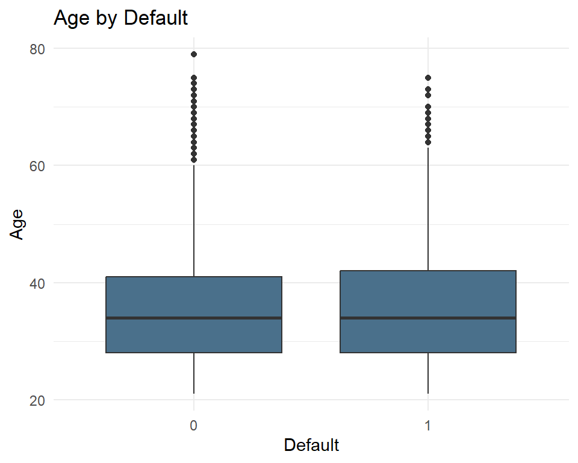
# Distribution of age (histogram)plot1 <-ggplot(data, aes(x = AGE)) +geom_histogram(color ="blue", fill ="skyblue4") +labs(x ="Age", y ="Count", title ="Age Distribution") +theme_minimal()# Distribution of age (density)plot2 <-ggplot(data, aes(x = AGE)) +geom_density(fill ="skyblue4") +labs(x ="Age", title ="Age Distribution") +theme_minimal()grid.arrange(plot1, plot2, ncol =2)
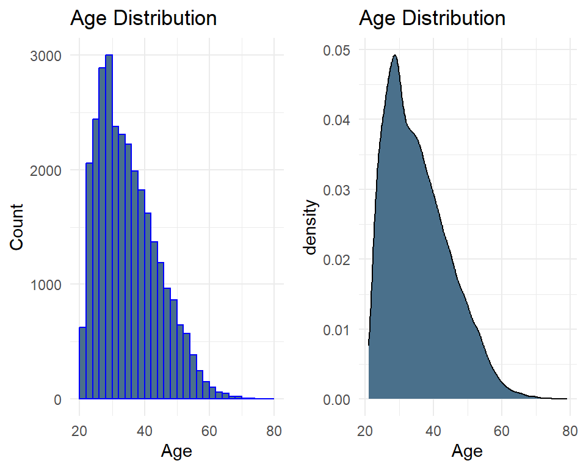
# Default rate by agedata %>%group_by(AGE) %>%summarise(default_rate =mean(default ==1)) %>%ggplot(aes(x = AGE, y = default_rate)) +geom_point() +geom_smooth(se =FALSE) +labs(x ="Age", y ="Default Rate", title ="Default Rate by Age") +theme_minimal()
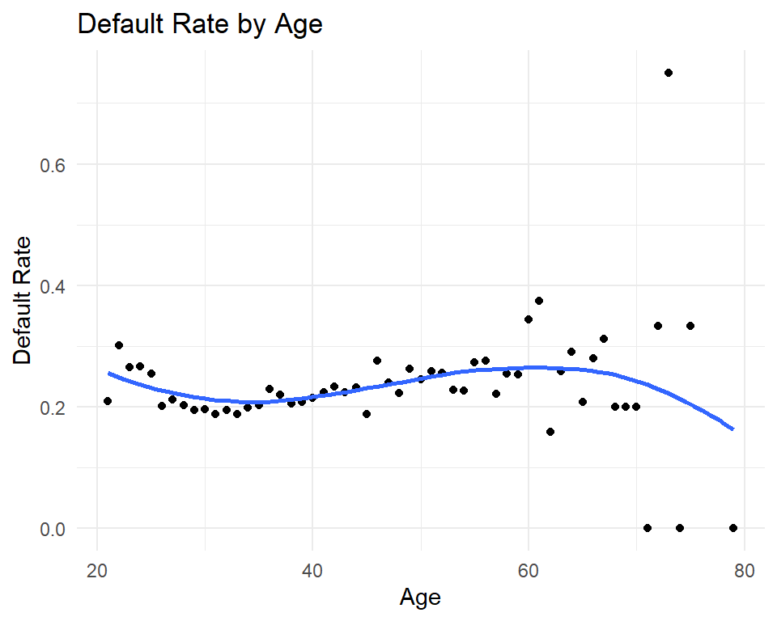
In general, no clear or strong pattern is observed in the relationship between age and default rate.
Exploration of credit limit variable
summary(data %>%select(LIMIT_BAL))
LIMIT_BAL
Min. : 10000
1st Qu.: 50000
Median : 140000
Mean : 167484
3rd Qu.: 240000
Max. :1000000
# Boxplot of credit limit by default statusggplot(data = data, aes(x =as.factor(default), y = LIMIT_BAL)) +geom_boxplot(fill ="skyblue4") +labs(title ="Credit Limit by Default", x ="Default", y ="Credit Limit") +theme_minimal()
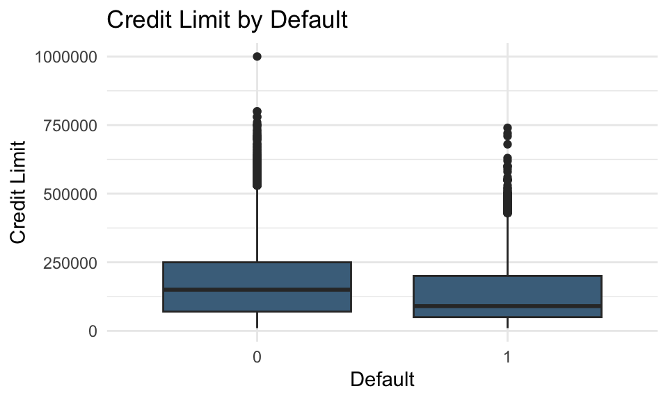
# Distribution of credit limit (histogram)plot_bal1 <-ggplot(data, aes(x = LIMIT_BAL)) +geom_histogram(color ="blue", fill ="skyblue4") +labs(title ="Credit Limit Distribution", x ="Credit Limit", y ="Count") +theme_minimal()# Distribution of credit limit (density)plot_bal2 <-ggplot(data, aes(x = LIMIT_BAL)) +geom_density(fill ="skyblue4") +labs(title ="Credit Limit Distribution", x ="Credit Limit", y ="Density") +theme_minimal()grid.arrange(plot_bal1, plot_bal2, ncol =2)
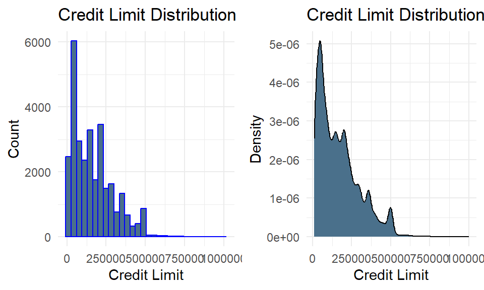
Lower credit limits appear to be associated with a higher probability of default.
Exploration of bill statement amount variables
billamt_colnames <-paste0("BILL_AMT", 1:6)bill_data <- data %>%select(starts_with("BILL_AMT"))summary(bill_data)
BILL_AMT1 BILL_AMT2 BILL_AMT3 BILL_AMT4
Min. :-165580 Min. :-69777 Min. :-157264 Min. :-170000
1st Qu.: 3559 1st Qu.: 2985 1st Qu.: 2666 1st Qu.: 2327
Median : 22382 Median : 21200 Median : 20089 Median : 19052
Mean : 51223 Mean : 49179 Mean : 47013 Mean : 43263
3rd Qu.: 67091 3rd Qu.: 64006 3rd Qu.: 60165 3rd Qu.: 54506
Max. : 964511 Max. :983931 Max. :1664089 Max. : 891586
BILL_AMT5 BILL_AMT6
Min. :-81334 Min. :-339603
1st Qu.: 1763 1st Qu.: 1256
Median : 18105 Median : 17071
Mean : 40311 Mean : 38872
3rd Qu.: 50191 3rd Qu.: 49198
Max. :927171 Max. : 961664
# Boxplots of bill statement amounts by default statusboxplots <-lapply(1:ncol(bill_data), function(i) {ggplot(data = data, aes(x = default, y = bill_data[[i]], colour = default)) +geom_boxplot() +labs(x ="Default",y ="Bill Amount",title = billamt_colnames[i] ) +theme_minimal()})do.call(grid.arrange, c(boxplots, ncol =2, nrow =3))
Payment delays, even for one month, are associated with a higher probability of default.
Solution B.3: Transformations
Task: Are there any transformations of the predictors that might improve model performance?
Relevant transformations of predictors
# Log transformation of AGEplot3 <-ggplot(data, aes(x =log(AGE))) +geom_histogram(colour ="blue", fill ="skyblue4") +labs(title ="Log Transformation of Age", x ="log(Age)", y ="Count") +theme_minimal()plot4 <-ggplot(data, aes(x =log(AGE))) +geom_density(fill ="skyblue4") +labs(title ="Log Transformation of Age", x ="log(Age)", y ="Density") +theme_minimal()grid.arrange(plot3, plot4, ncol =2)
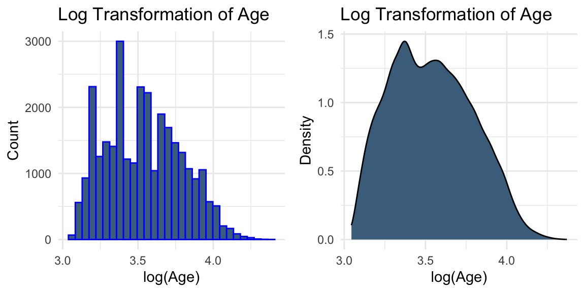
# Square-root transformation of AGEplot5 <-ggplot(data, aes(x =sqrt(AGE))) +geom_histogram(colour ="blue", fill ="skyblue4") +labs(title ="Square-root Transformation of Age", x ="sqrt(Age)", y ="Count") +theme_minimal()plot6 <-ggplot(data, aes(x =sqrt(AGE))) +geom_density(fill ="skyblue4") +labs(title ="Square-root Transformation of Age", x ="sqrt(Age)", y ="Density") +theme_minimal()grid.arrange(plot5, plot6, ncol =2)
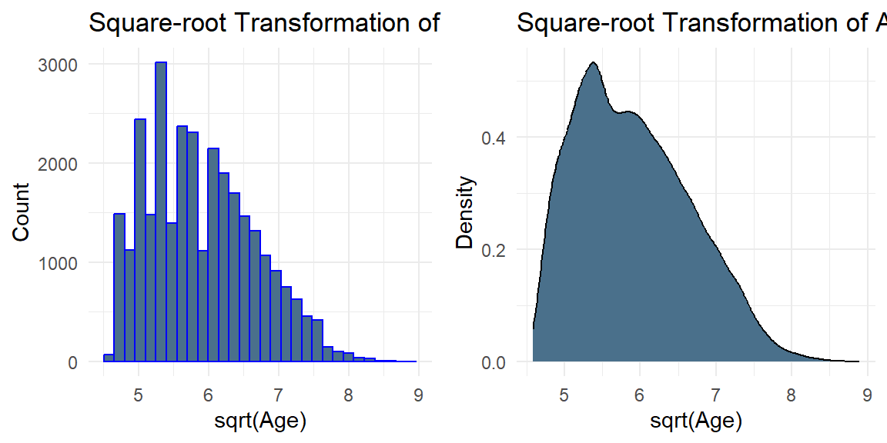
# Square-root transformation of LIMIT_BALplot_bal3 <-ggplot(data, aes(x =sqrt(LIMIT_BAL))) +geom_histogram(colour ="blue", fill ="skyblue4") +labs(title ="Square-root Transformation of Credit Limit", x ="sqrt(LIMIT_BAL)", y ="Count") +theme_minimal()plot_bal4 <-ggplot(data, aes(x =sqrt(LIMIT_BAL))) +geom_density(fill ="skyblue4") +labs(title ="Square-root Transformation of Credit Limit", x ="sqrt(LIMIT_BAL)", y ="Density") +theme_minimal()grid.arrange(plot_bal3, plot_bal4, ncol =2)
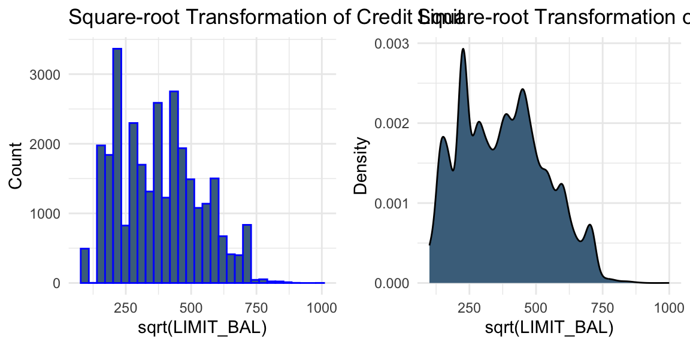
While transformations such as logarithmic and square-root transformations are commonly used to reduce skewness, the visual evidence here is not strong enough to suggest that they are necessary.
In practice, transformations can be treated as part of the modelling process. For example, we may compare models built using the original variables and their transformed versions, and evaluate their performance using validation data.
Solution B.4: Correlation and multicollinearity
Task: Rename the column “default payment next month” as “default”. Are there strong relationships between the default variable and other numeric variables? How can you handle highly correlated variables?
Relationships between the default variable and other numeric variables
Here, we examine the correlation between the default variable and other numeric variables.
# Select variables to exclude from the correlation matrixpay_colnames <-paste0("PAY_", 1:6) # Create a numeric version of the default variable for correlation analysisdata$default_numeric <-as.numeric(as.character(data$default))# Correlation plotcor_data <- data %>%select(-EDUCATION, -SEX, -MARRIAGE, -ID, -all_of(pay_colnames), -default) %>%select(where(is.numeric))corrplot(cor(cor_data), method ="circle")
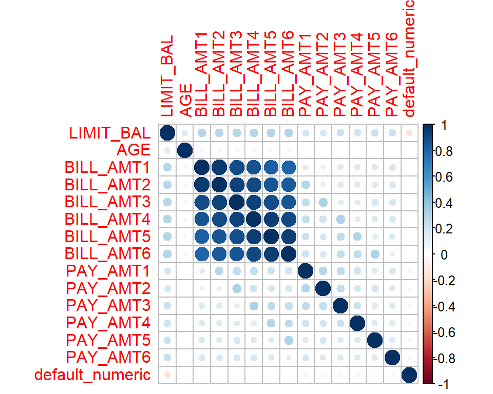
We observe strong linear correlations between the bill statement amounts in different months. This is expected because these variables describe related financial quantities measured repeatedly over time.
In the presence of multicollinearity, possible approaches include ridge regression, lasso regression, elastic net regression, and principal component analysis (PCA). Removing variables is also a possible option, but it is typically considered a last resort, as it may discard useful information and reduce interpretability.
Noll, Alexander, Robert Salzmann, and Mario V Wuthrich. 2020. “Case Study: French Motor Third-Party Liability Claims.”Available at SSRN 3164764.
Yeh, I-Cheng, and Che-hui Lien. 2009. “The Comparisons of Data Mining Techniques for the Predictive Accuracy of Probability of Default of Credit Card Clients.”Expert Systems with Applications 36 (2): 2473–80.